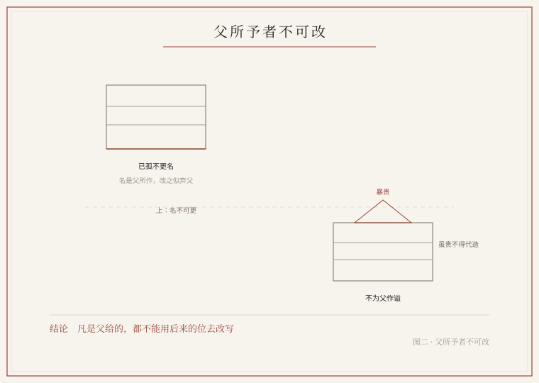

曲礼下 · 二·十四 · 第 137 课
父没之后，不改自己的名；即使骤然显贵，也不为父亲追作谥号。
说什么事：君子已孤不更名。已孤暴贵，不为父作谥。
落在哪一层：礼，兼及礼意。名与谥皆系于父。
为何编在此位：上两节论去国之后礼从何国；此节收回身内，论名字从何而来——都是「本」的问题。
【经】君子已孤不更名。已孤暴貴，不為父作謚。
【注】亦重本。子事父，無貴賤。
【疏】「已孤不更名」者，不复改易，更作新名。所以然者，名是父之所作，父今已死，若其更名，似遗弃其父，故郑注云「亦重本」也。……「暴贵」者，本为士庶，今起为诸侯，非一等之位，故云「暴贵」也。谥者，列平生德行，而为作美号。若父昔贱，本无谥，而己今暴贵，升为诸侯，乃得制谥，而不得为父作谥。所以尔者，父贱无谥，子今虽贵，而忽为造之，如似鄙薄父贱，不宜为贵人之父也。
已孤 疏「此孤不辨老少，唯无父则是也」。孤者，无父，不论年岁。
更名 改换名字。疏「不复改易，更作新名」。
暴贵 注疏「本为士庶，今起为诸侯，非一等之位」。骤然而贵，非积渐。
作谥 谥者，列平生德行而为之美号。为父作谥，即追尊。
亦重本 注二字。上节「重本」谓守国俗，此节「重本」谓守父之所予。
子事父，无贵贱 注六字。子之贵，不足以改父之贱。
父亲去世之后，不改自己的名字。父亲去世之后，即使骤然显贵，也不为父亲追作谥号。
名与谥，都是别人给的。名是父所命，故父没而不改；谥是位所得，故父本无谥，子虽贵而不得代造。此节把「我能改什么」划了一条下限：凡是父亲给的，都不能用自己后来的地位去改写。
第一层 名是父所作 疏一语最重：「名是父之所作，父今已死，若其更名，似遗弃其父。」改名的罪，不在字，在弃。
第二层 谥是位所得 能为父作谥，须先有制谥之位。有是位而无是德，追尊即为「鄙薄父贱」。
第三层 暴贵二字的分量 「暴」者，骤也。礼对骤贵者格外谨慎：因为骤贵之人最容易用新位改写旧事。
第四层 两事一理 名与谥，一在生前所命，一在身后所加。皆非己之力所能及，故皆不可改。此之谓「重本」。
与今日何干 改了名字、换了身份、发了财，回头给父母追加一个体面的名目——今人以为孝，古人以为嫌。分寸在此。
| 左 | 右 |
|---|---|
| 已孤不更名 | 名是父所作，改之似弃父 |
| 已孤暴贵 | 本为士庶，起为诸侯 |
| 不为父作谥 | 父贱无谥，子贵不得代造 |
| 谥者，列平生德行 | 美号须有其实 |
| 亦重本 | 上节重国本，此节重父本 |
| 子事父，无贵贱 | 子之贵，不足以改父之贱 |
画上下两组：上方一块长方形名版，版上留一道空白，版下沿封着一道漆封的细线，线与版之间不留缝（示意不可更易）；下方一块同样的名版，版面上同样空白，但版的上方多画一顶高高的冠（示意骤贵），冠与版之间以极淡的虚线相连，虚线上加一小撇（示意不得代加）。两组之间画一道极淡的横线分隔。不写文字。赭色只用在上面那道漆封线上。
